Carousel 04
The Stack I Didn't Choose · Stage 2
July 2026
9 Workarounds for an
AI Tool That Isn't Good Yet
The company I work for started building its own AI tooling. Early on it was rough — and I couldn't switch to something better. Here's how you get real work out of a tool you didn't pick.
R
Ryu Vy
AIToolsDaily24 · By a human, for humans
Stage two of this series: the company I work for started building its own AI tooling. That's the whole sentence I'm going to write about it — it's their software, not my story.
My story is that early on, it wasn't very good, and I couldn't switch to something better. That's the part worth publishing, because it's the situation most people are actually in. You don't get to pick. You get what you're given, and the question is what you do with it.
What I found is that a weak tool doesn't need different prompts so much as a different posture. You stop asking it to think and start asking it to do one small, checkable thing at a time. These nine are what came out of that.
The Nine
Every Workaround, Copy-Paste Ready
01 / 09Scope
Halve the Ask
"Just do step one: [single action].
Stop there. Don't continue."
Weak tools break on compound requests — they'll do the first part, drift on the second, and present the whole thing with equal confidence. One verb per prompt. It feels slower and it is dramatically faster, because you stop rerunning things you thought were finished.
02 / 09Format
Bound the Output
"Answer in exactly 3 bullets, 12 words
max each. No preamble."
A weak model rambles its way into being wrong — the error usually arrives in sentence four, after it has run out of things it actually knows. Give it no room to wander. A hard cap on length is a hard cap on invention.
03 / 09Literal
Kill the Creativity
"No suggestions, no alternatives.
Just the literal answer."
Hallucination is improvisation. Every time you leave space for the model to be helpful, a weak one fills that space with plausible fiction. Asking for the literal answer and nothing else removes the invitation.
04 / 09Check
Ask It Twice
"Answer this again from scratch.
Ignore your previous answer."
The cheapest verification there is. Two independent attempts that agree is weak evidence it's right; two that disagree is strong evidence something is guessed. You're not looking for confirmation, you're looking for the contradiction.
05 / 09Source
Make It Cite
"For each claim, quote the line you got
it from. No quote — delete it."
This one converts a bad answer into an honest blank, which is far more useful. Anything the model can't point at in your source, it made up. The deletion clause matters — without it you get citations invented to match the claims.
06 / 09Context
Re-Ground Every Time
"Here's everything again: [paste].
Ignore all earlier messages."
Weak tools lose the thread, and they lose it silently — the answers just quietly get worse. Re-pasting your context costs five seconds and saves a rewrite. Assume nothing carried over, every single turn.
07 / 09Draft
Ask for Crude First
"Give me the crudest version that
works. We'll refine after."
Ask a weak model for polished output and you get confident nonsense that looks finished — which is the most expensive failure mode, because it survives review. Ask for crude and the gaps are visible, so you can fix them.
08 / 09Limits
Two Strikes
Missed the same ask twice? Stop.
Do it yourself or switch tools.
Not a prompt — a rule. The third attempt almost never lands, and by the fifth you've spent more time than doing it manually. Knowing when to quit is the actual skill, and it's the one nobody writes tutorials about.
09 / 09Reuse
Bank the Wins
"That worked. Rewrite it as a reusable
template with [blanks]."
A weak tool is unreliable in general but remarkably consistent about the narrow things it can do. Every time you find one of those, turn it into a template immediately. That library becomes the real value — and it survives the tool.
// The thing nobody says
Every one of these still works on a good model. They're just optional there and mandatory here. Which means time spent on a bad tool isn't wasted — it teaches you the discipline that makes a good tool much harder to misuse. I prompt better now because of the stretch where I had to.
The Series
Five Eras, None of Them Mine
This is stage two of five. Stage one was the open era — use any AI you like, never put company data in it. Stage three is the one most people are living right now: the external tools get banned outright, and everything moves inside overnight.
The Slides
All Eleven, Full Size
The full set at full size. Save the ones you'll actually use — or screenshot the lot.
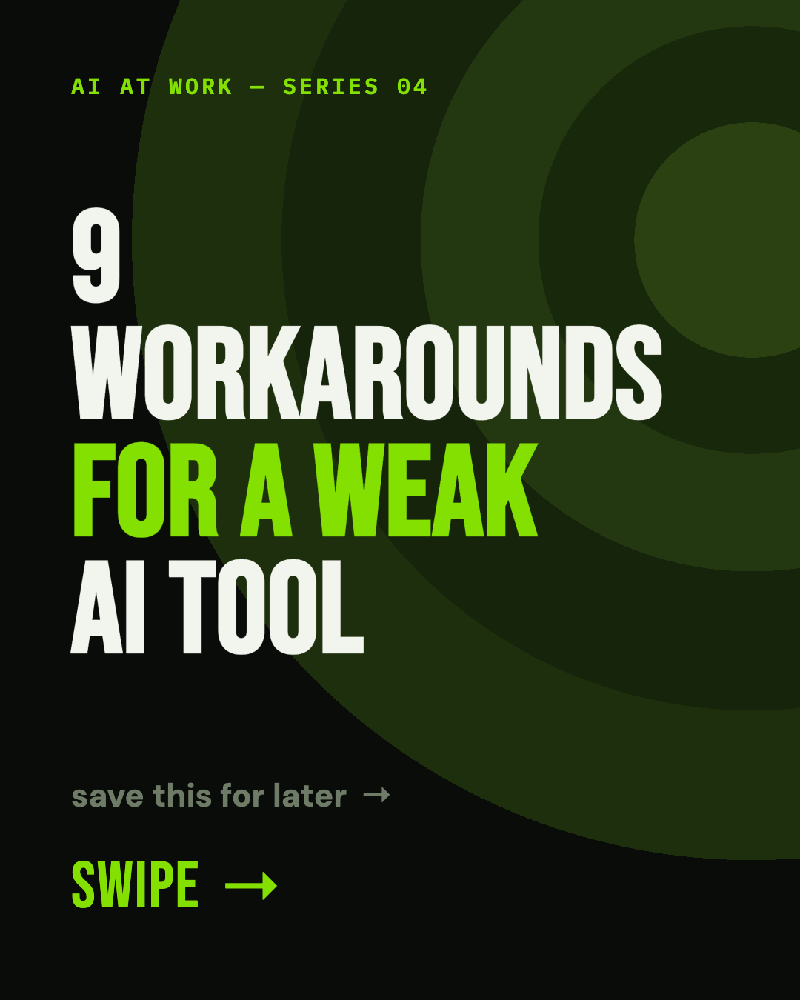
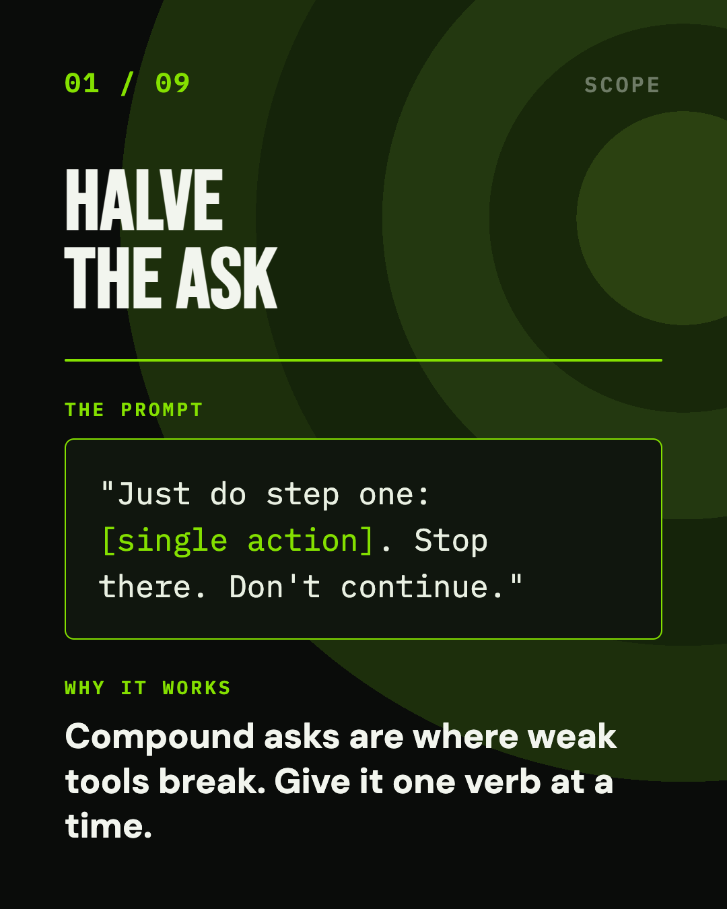
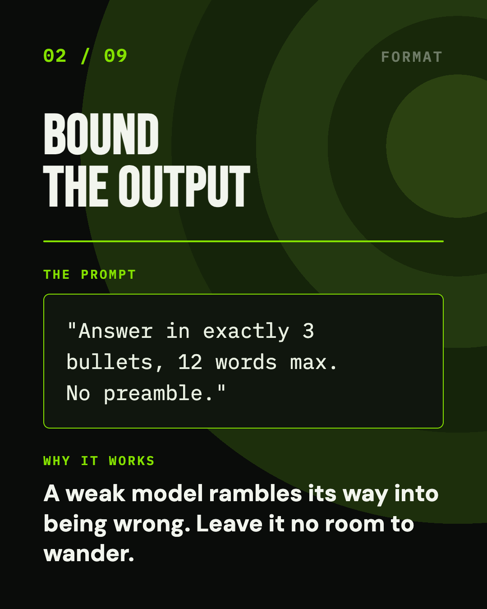
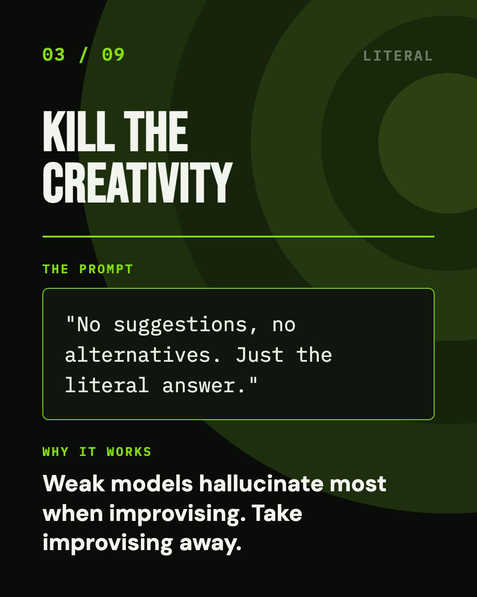
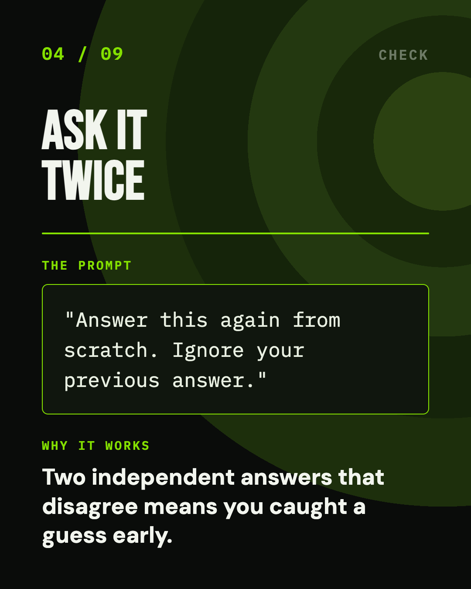
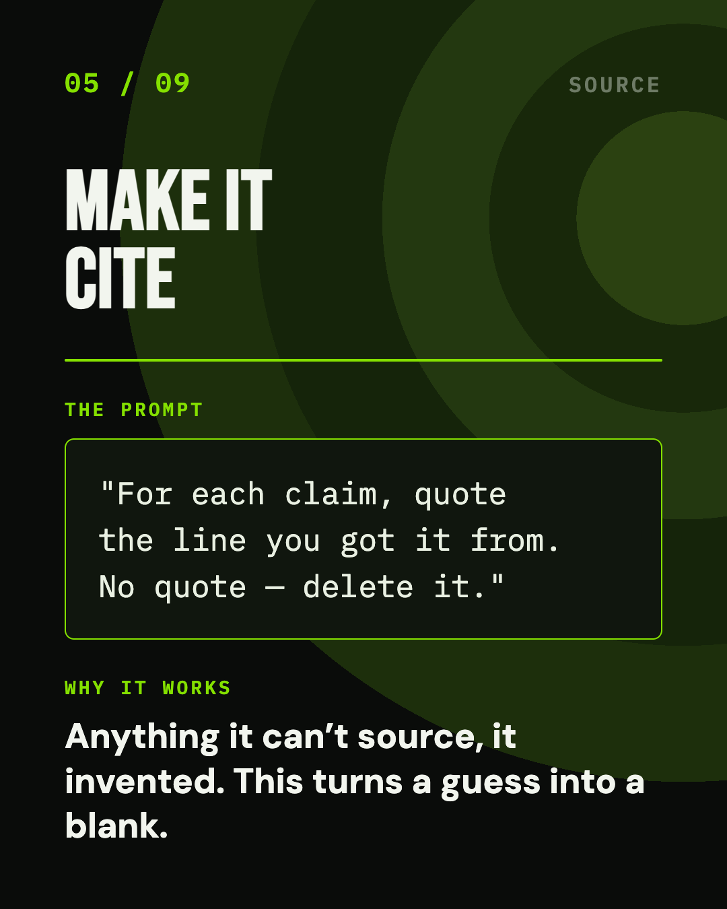
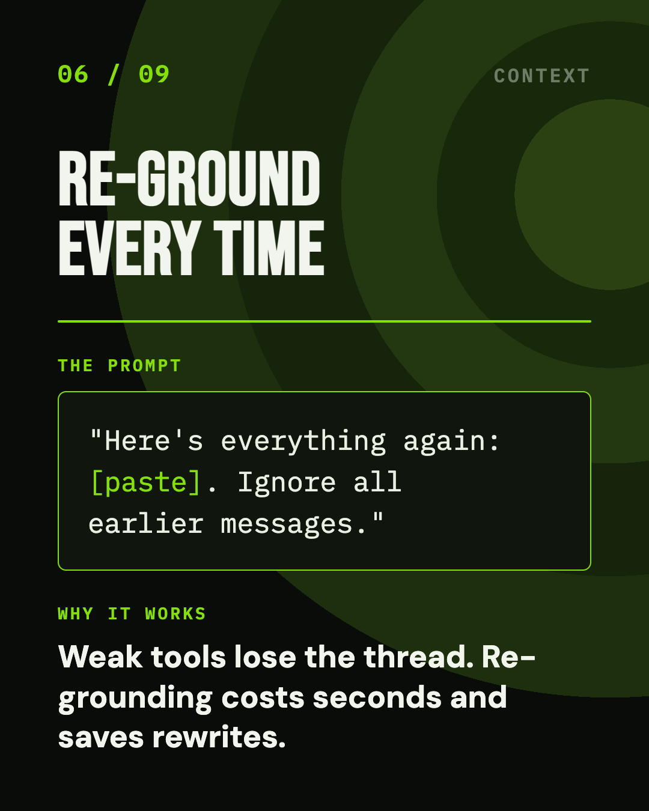
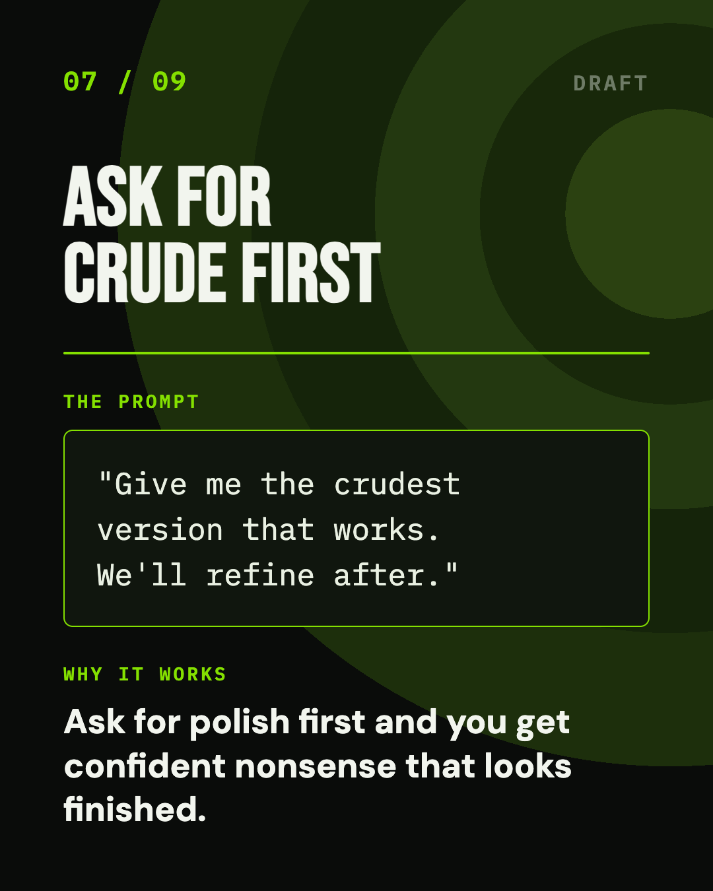
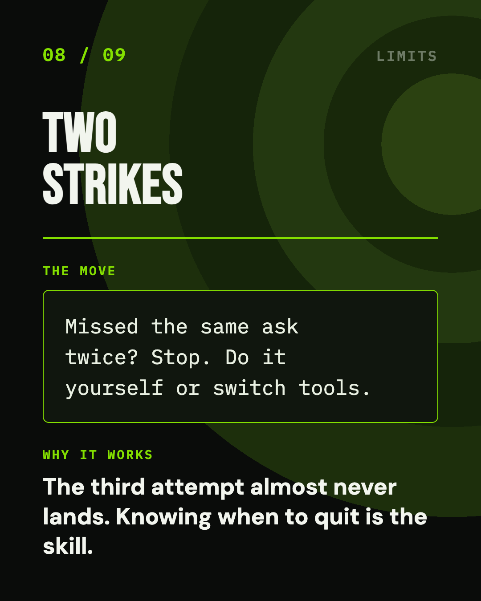
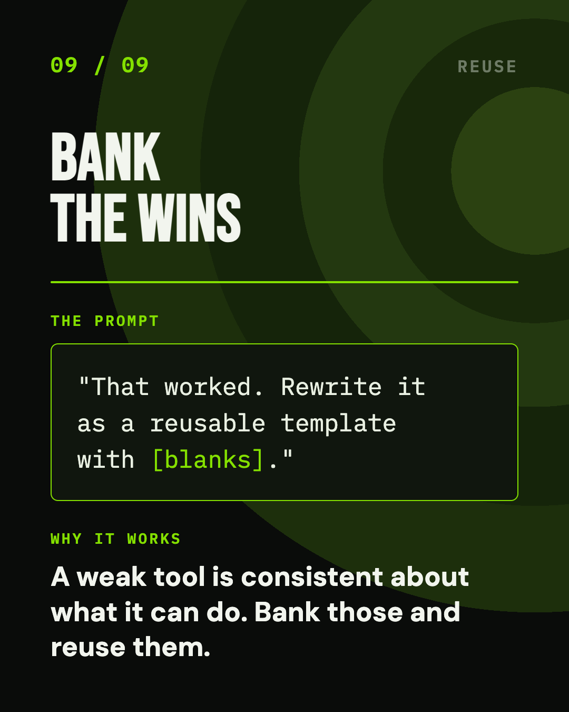
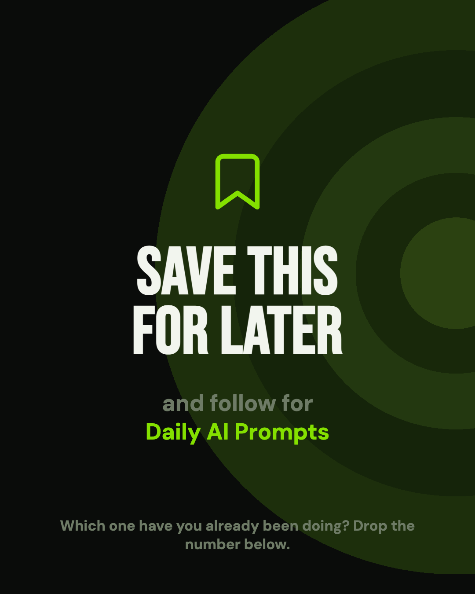
Eleven slides · 1080×1350